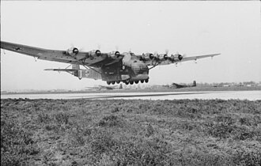

| Spesifikasi | Detail |
|---|---|
| Jenis | Pesawat Angkut Berat |
| Awak | Biasanya 5 orang (2 Pilot, Navigator, Operator Radio/Mekanik, Teknisi Pemuatan) |
| Panjang | 28,20 m |
| Lebar Sayap | 55,20 m |
| Tinggi | 10,15 m |
| Berat Kosong | Sekitar 27.330 kg |
| Berat Lepas Landas Maksimum | Hingga 130.000 kg (beberapa varian percobaan) namun operasional sekitar 43.000 - 55.000 kg |
| Mesin | Awalnya 6 x Gnome-Rhône 14M 4/5 radial (Me 323 D), kemudian 6 x Renault 14R (Me 323 E) |
| Tenaga Mesin | 6 x 760 PS (559 kW) untuk Gnome-Rhône, 6 x 700 PS (515 kW) untuk Renault |
| Kecepatan Maksimum | Sekitar 270 km/jam |
| Jarak Jelajah | Sekitar 800 km dengan muatan |
| Plafon Terbang | Sekitar 4.000 m |
| Kapasitas Kargo | Sekitar 10-12 ton atau sekitar 130 tentara bersenjata |
| Persenjataan Pertahanan | Bervariasi, biasanya beberapa senapan mesin 7,92 mm MG 15 atau MG 81 di berbagai posisi (punggung, samping, depan) |
| Produksi | Sekitar 213 unit |